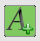
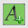

OpenCPN makes a serious effort to be compliant with IHO standards for ECDIS display of cartography.
First, one very important setting for vector charts is handled directly from the main toolbar.
 This button toggles all text displayed on a vector chart On and Off.
The hotKey “T” is an alternative for toggling the text.
In OpenGL mode, all text will always be horizontal when using the “Course Up” option.
This button toggles all text displayed on a vector chart On and Off.
The hotKey “T” is an alternative for toggling the text.
In OpenGL mode, all text will always be horizontal when using the “Course Up” option.
Second, double clicking on a vector chart, as long as the cursor hasn't changed to a green arrow near the edges, brings up an information dialog, displaying the available vector-chart information at the selected point. Scroll down to see all the information. An alternative to double clicking is right-clicking and selecting “Object Query”. Note that a single normal (left) click will center the chart at that point.

The example is taken from double-clicking on a lighthouse in a busy area. Exactly what is shown in this dialog depend on the settings described below in “Display Categories”.
Third, it is possible to select what font is used for the text on vector charts. There is an entry in the ToolBox→Languages/Fonts→Choose Fonts tab, called ChartTexts. Here you select what font to use, and a template size. Weight and final size of the displayed texts depends on the charts you are using, but if the charts contain various weights and sizes, they will all scale together depending on what size you select.
Options-Charts-Vector Charts Tab is where everything else is handled.
If the S63 chart plugin is active, there will also be a “S63 Charts” tab. Read more about S63 Vector Charts when you have read this page.